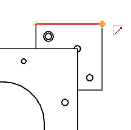
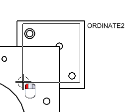
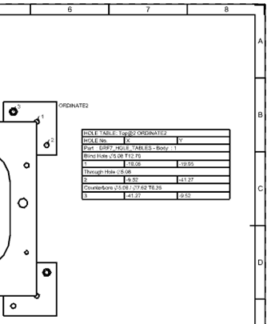
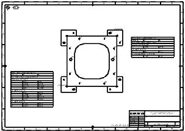

Create multiple hole tables
You will create two hole tables on the detail drawing: one for the base plate and one that represents the holes in all of the locator blocks.
-
In the Part Navigator
 , double-click Sheet “Sheet 2” to make it the active sheet.
, double-click Sheet “Sheet 2” to make it the active sheet.
-
On the Table toolbar, click Hole Table .
-
In the Hole Table dialog box, make sure Type is set to Create Table and that Select Ordinate Origin
 is highlighted.
is highlighted.
-
Select the end point of the top edge of the top right locator block, as shown.

-
In the Holes group, click Window Selection.
Select Hole
is highlighted.
-
In the graphics window, click and drag to select the holes in the locator plate.
Tip
You can also manually select each hole in the locator plate. To deselect a hole, press Shift and select the hole.

-
In the Settings group, from the Quadrant list, select Positive Quadrant III.
-
Click Specify Table Origin, and place the table in zone B6 and click Apply.

-
Repeat steps 3 through 8 to create a separate table for the base plate holes using the following settings:
-
Set the ordinate origin in the lower left corner of the base plate.
-
Select only the holes in the base plate. If you select additional geometry by mistake, make sure to deselect them before creating the hole table.
-
Set the Quadrant to Positive Quadrant I.
-
Place the table in zone D1.
Your drawing should look like this when you are finished.

-